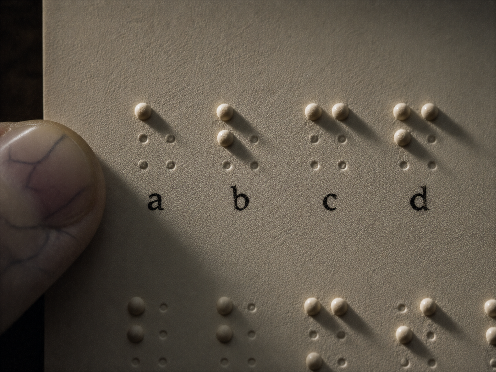

·································· · D E S C E N T · 32 / 40 · ··································

One person could not move their own.
So the first model learned that person's hand —
to guess where it would go, and go there for them.
( four marks sit blind below, each carrying a name only a fingertip could read. )